Revision v6 · figures
Package figure 1. Local differential maps and prescribed replacement
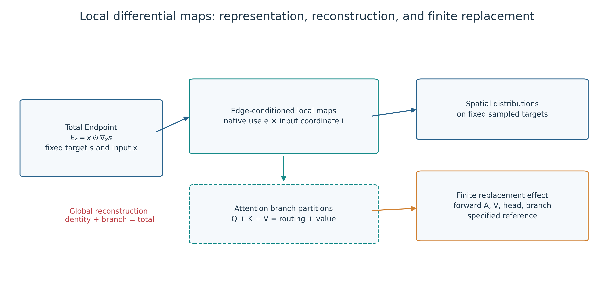
左侧为固定目标和输入点的 Total Endpoint。中间保留原生 use 身份与输入坐标，并将 attention 分支内部的微分分组单独定义。右侧分别比较空间分布与规定有限替换效应。全局闭合须包含 residual bypass；分支分组只重构 attention branch contribution。
Left: Total Endpoint for one fixed target and input point. Middle: retain native-use identity and input coordinates, with a separate definition for differential partitions inside attention. Right: compare spatial distributions and prescribed finite replacement effects. Global closure includes the residual bypass; a branch partition reconstructs only the attention branch contribution.
Package figure 2. Residual bypass distinguishes branch and global reconstruction
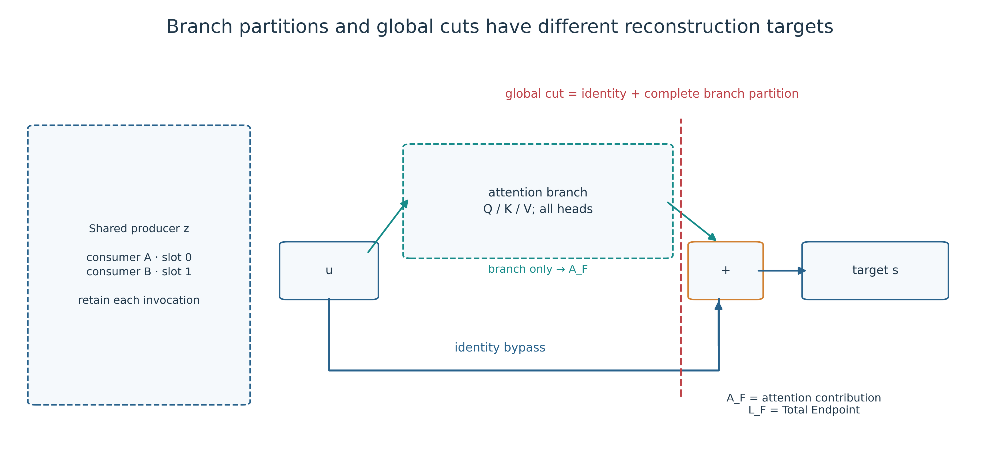
左栏区分共享 producer 的两个 consumer slots。中栏的蓝色下路是 residual identity bypass，上路为 attention branch。绿色虚线框只包含 branch partition，闭合到 attention branch contribution A_F。红色虚线表示全局切面，包含 identity 及完整 branch partition，闭合到 Total Endpoint L_F。右栏列出两种不同的重构目标。
Left: two consumer slots of a shared producer remain distinct. Middle: the lower blue path is the residual identity bypass; the upper path is attention. The green dashed region contains a branch partition and reconstructs attention branch contribution A_F. The red dashed global cut includes identity and the complete branch partition and reconstructs Total Endpoint L_F. Right: the two reconstruction targets.
Package figure 3. Initialization: split the input, then assign one image to each coordinate
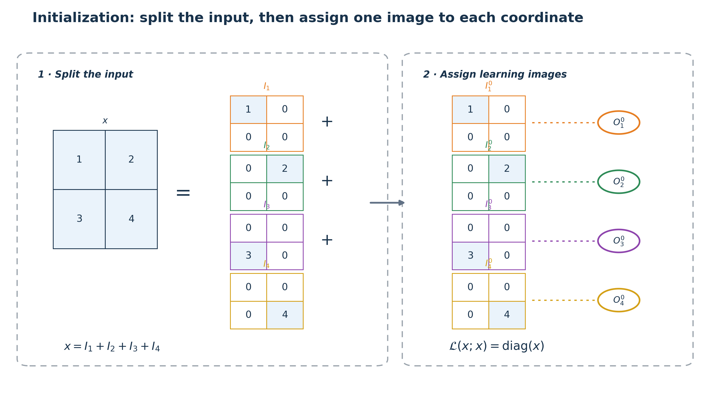
初始化分为拆分与分配两步：输入矩阵被拆成四张稀疏坐标图，并按同色虚线分配给四个输入节点。每张图同时保存输入值与其位置。
Initialization has two steps: split the input into four sparse coordinate images and assign them to input nodes using matching colored links. Each image preserves both value and position.
Package figure 4. Generation: collect every input path to the selected target
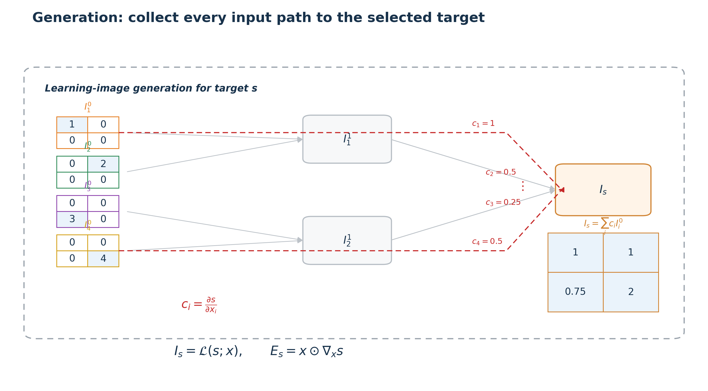
中间网络以灰色显示，红色虚线路径突出每个输入坐标到目标的合成局部系数。右下矩阵是四张输入 learning images 的加权和，与输入乘目标梯度一致。
The intermediate graph is muted while red dashed paths highlight composed local coefficients from every input coordinate to the target. The lower-right matrix is the weighted sum of input learning images and equals input times target gradient.
Package figure 5. Patch embedding is a local projection and a sparse global linear map
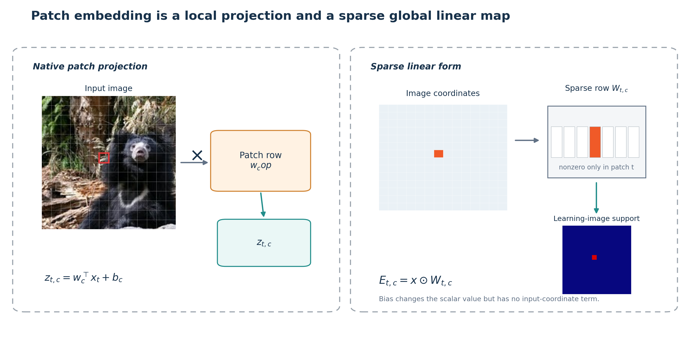
左栏以真实图像说明 patch embedding 的局部投影；右栏将同一运算写成全局输入上的稀疏线性行。橙色区域在 token、稀疏权重与 learning-image support 之间一一对应。
The left panel shows native patch projection on a real image; the right expresses the same operation as a sparse row over global input coordinates. The orange region corresponds across token support, sparse weights and learning-image support.
Package figure 6. Attention branch differential partitions
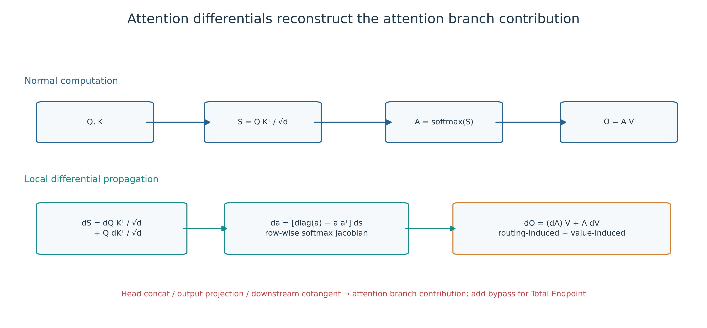
上行是单个 head 的前向计算，$A$ 为 attention probability，$V$ 为 value projection。下行在同一前向点分解 $\mathrm dO_h=(\mathrm dA)V+A\mathrm dV$。Q-induced 与 K-induced 合成 routing-induced differential，V-induced 为 value-induced differential。各 head 经 concat 和 output projection 的下游 cotangent 收缩后，分组重构 attention branch contribution。全局目标还需 residual bypass。
The upper row shows one head's forward computation, with attention probability $A$ and value projection $V$. The lower row decomposes $\mathrm dO_h=(\mathrm dA)V+A\mathrm dV$ at the same forward point. Q-induced and K-induced terms form the routing-induced differential; the V-induced term is the value-induced differential. After contraction with the downstream cotangent through head concatenation and output projection, these terms reconstruct the attention branch contribution. The global target additionally requires the residual bypass.
Package figure 7. Residual global reconstruction of Total Endpoint
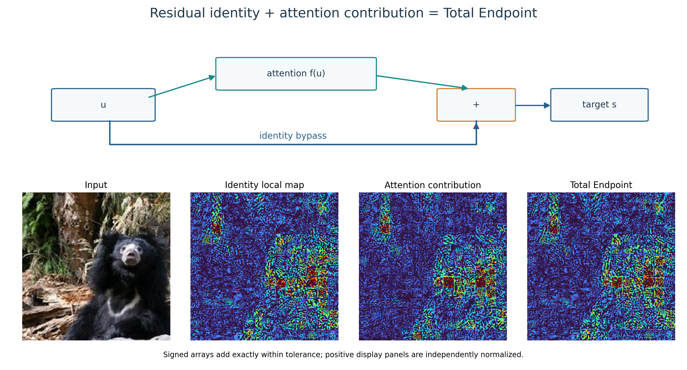
Residual addition 的 identity 与 branch 输入分别定义局部图。二者使用同一最终类别目标和 addition 输出 cotangent。完整 signed 图之和为 Total Endpoint；蓝底正部视图单独归一化，仅用于空间阅读。
The identity and branch inputs of a residual addition define separate local maps for the same final class target and the cotangent at the addition output. Complete signed maps sum to Total Endpoint. Independently normalized blue positive displays show spatial structure.
Package figure 8. Different targets reveal different parts of the same input
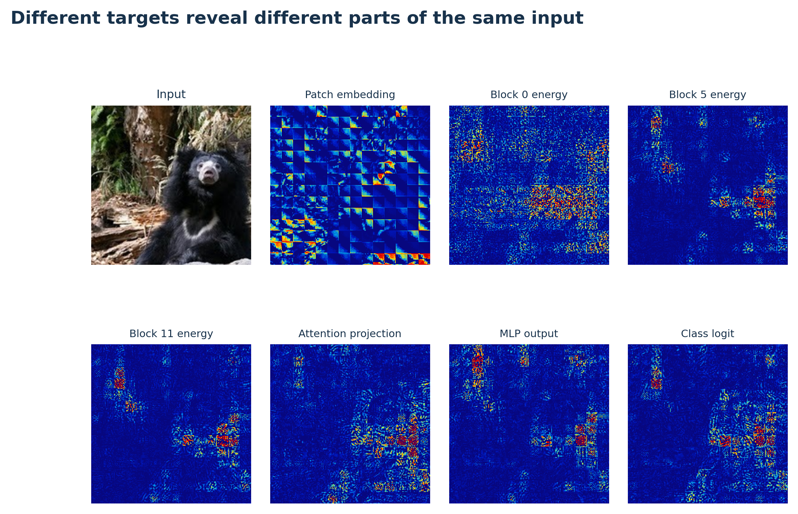
从左至右、从上至下为同一懒熊输入、patch embedding energy、blocks 0/5/11 energy、block 5 attention projection energy、MLP output energy 和 ground-truth class logit 的 normalized-input Endpoint。模型为 DeiT-S/16。每个 energy 使用相应前向空间方差最大 channel 的半平方和目标。每个 map panel 取 signed RGB sum 的正部，以正值 P99 截断并开方，各 panel 独立缩放；单个展示样本，无统计区间或总体推断。
Left-to-right, top-to-bottom: the sloth-bear input and normalized-input Endpoint for patch-embedding energy, block-0/5/11 energy, block-5 attention-projection energy, MLP-output energy, and the ground-truth class logit in DeiT-S/16. Each energy is the half-squared-sum target for the channel with highest forward spatial variance at that site. Map panels show the positive signed RGB sum, clipped at positive P99 and square-root transformed independently. One display image is shown, without intervals or population inference.
Package figure 9. DeiT-S/16: learning images through all twelve blocks
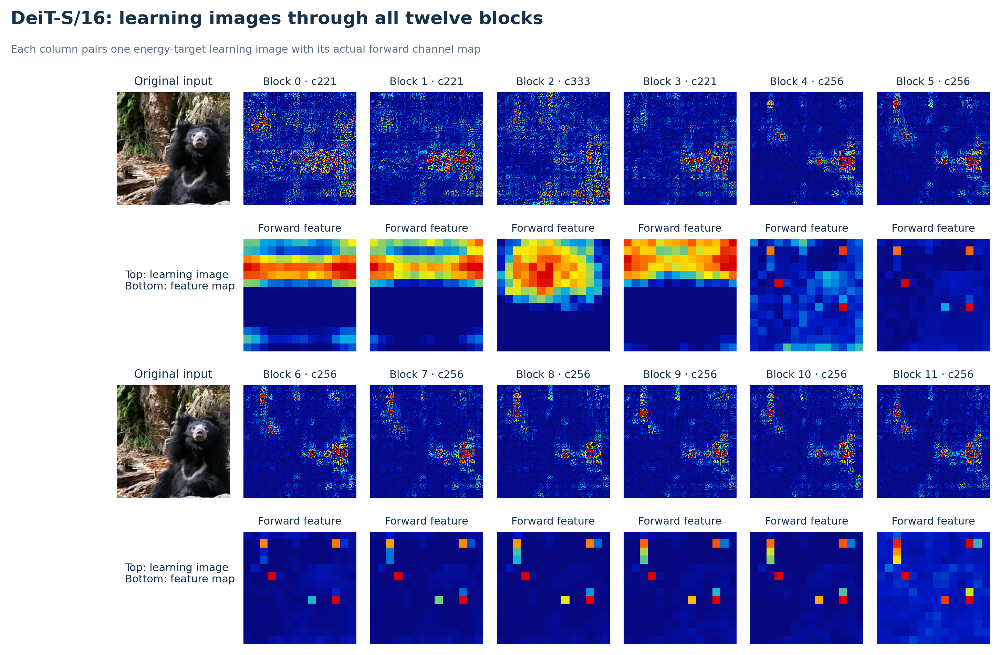
同一懒熊输入跨全部 12 层的学习图像及真实前向特征。每层通道按前向空间方差选择；上排为该通道 energy scalar 的输入图，下排为该通道原生 14×14 activation 的正部。各面板独立缩放。
Learning images and actual forward features across all 12 blocks for the same sloth-bear input. Each block selects a channel by forward spatial variance. The upper row shows its energy-target input map, and the lower row the positive native 14×14 activation. Panels are independently scaled.
Package figure 10. ViT-B/16: learning images through all twelve blocks
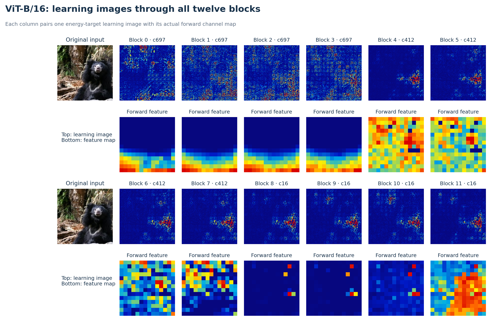
同一懒熊输入跨全部 12 层的学习图像及真实前向特征。每层通道按前向空间方差选择；上排为该通道 energy scalar 的输入图，下排为该通道原生 14×14 activation 的正部。各面板独立缩放。
Learning images and actual forward features across all 12 blocks for the same sloth-bear input. Each block selects a channel by forward spatial variance. The upper row shows its energy-target input map, and the lower row the positive native 14×14 activation. Panels are independently scaled.
Package figure 11. Inside a block: normalization, attention and the MLP
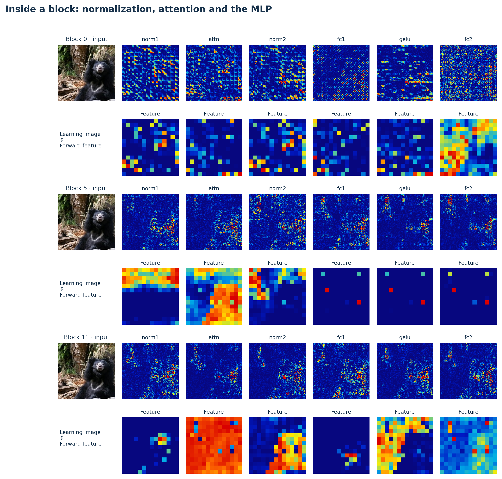
DeiT-S blocks 0、5、11 内部模块的学习图像和真实前向 activation。每个模块独立选择高空间方差通道并定义 energy target；LayerNorm、attention projection、MLP 的 fc1/GELU/fc2 清楚对应。
Learning images and actual forward activations inside DeiT-S blocks 0, 5 and 11. Each module independently selects a high-spatial-variance channel and defines an energy target, covering LayerNorm, attention projection and MLP fc1/GELU/fc2.
Package figure 12. Spatial dependence broadens with depth
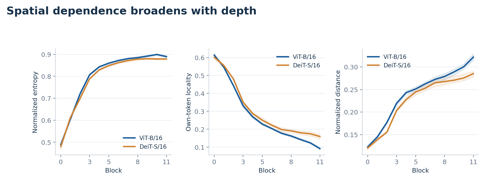
左、中、右 panel 分别为 normalized-input Endpoint 的空间熵、own-token locality 和 normalized distance。每个 block 先在图内取固定 token-channel 目标的中位数，再汇总 100 张 evaluation 子集图像的中位数。CLS 仅进入熵统计；locality 扣除同面积均匀基线。阴影为 10,000 次图像 bootstrap 的 95% 区间。两条曲线对应两个固定 checkpoint。曲线为描述性 block 轨迹，late-minus-early 检验属于结果访问前冻结的五项 family。
Left, middle, and right panels show normalized-input Endpoint spatial entropy, own-token locality, and normalized distance. At each block, medians over the fixed token-channel targets are computed within images and then summarized by the median over 100 images from the evaluation subset. CLS enters entropy only; locality subtracts the equal-area uniform baseline. Shading shows 95% intervals from 10,000 image bootstraps. Curves correspond to two fixed checkpoints and are descriptive block profiles; late-minus-early tests belong to the five-item family frozen before outcome access.
Package figure 13. Attention heads distribute dependence differently
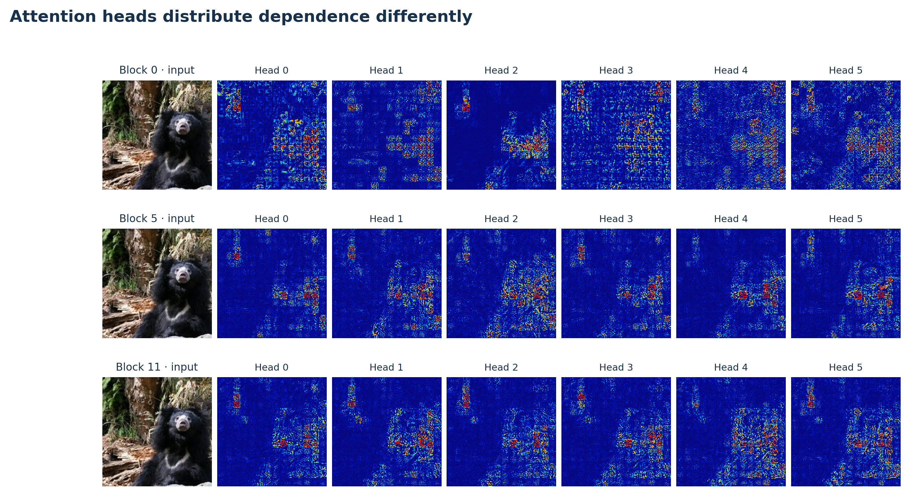
DeiT-S 在 blocks 0、5、11 的全部六个 heads，对同一个 ground-truth logit 的输入依赖图。原图逐行保留，无按地图观感筛选 head。
All six DeiT-S heads at blocks 0, 5 and 11, conditioned on the same ground-truth logit. Each row retains the original image, and no heads are selected by visual appearance.
Package figure 14. Class-target learning images across two models
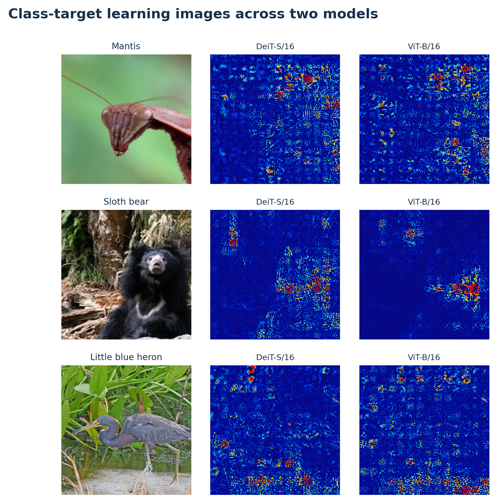
三个主体可辨的展示样本及两模型的同类别 Endpoint。样本为展示选择，模型间颜色强度不作为量值比较。
Three presentation-selected images with recognizable subjects and same-class Endpoints from both models. Color intensities are not used for cross-model magnitude comparisons.
Package figure 15. Routing and value on the same image and class target
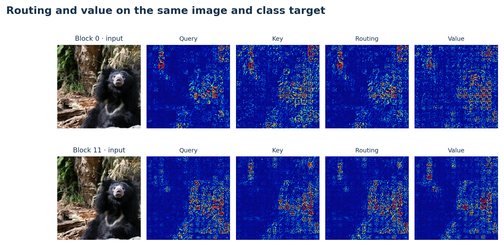
上下两行分别为 DeiT-S/16 blocks 0 和 11，同一懒熊输入和 ground-truth logit。每行从左至右为输入、Q-induced、K-induced、routing-induced 与 value-induced 图，routing-induced 是 Q 与 K 图之和。图为 normalized-input 坐标的正部显示，正值 P99 截断、开方并独立缩放；没有跨 panel 幅值可比性。单例描述，无误差带。
Rows show DeiT-S/16 blocks 0 and 11 for the same sloth-bear input and ground-truth logit. Columns show the input, Q-induced, K-induced, routing-induced, and value-induced maps; routing-induced is the sum of Q and K maps. These normalized-input positive displays are independently clipped at positive P99 and square-root transformed, so color magnitudes are not comparable across panels. This is a single descriptive example without uncertainty bands.
Package figure 16. Deep attention departs from Value-only propagation
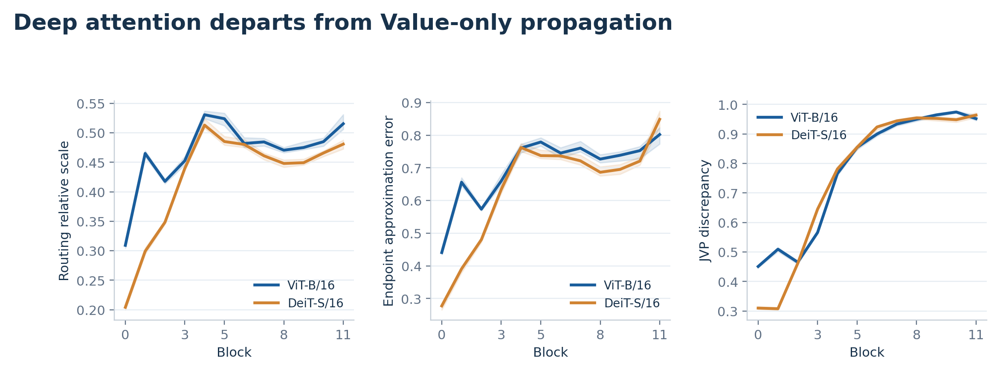
左 panel 为 routing-induced 相对 absolute mass，中 panel 为 Value-only 与完整 attention branch 图的 relative L2 error，右 panel 为冻结方向上的 JVP discrepancy。每个 block 先对图内全部 heads 取中位数，再汇总每 checkpoint 400 图的中位数。阴影为 10,000 次图像 bootstrap 的 95% 区间。空间图使用 normalized-input 坐标，JVP 使用八个冻结方向。曲线描述固定 checkpoint，层深对比按各模型结果访问前冻结的 family 检验。
Left panel: routing-induced relative absolute mass. Middle: relative L2 error of the Value-only map against the full attention branch map. Right: JVP discrepancy over frozen directions. Each block takes the within-image median across all heads and then the median across 400 images per checkpoint. Shading shows 95% intervals from 10,000 image bootstraps. Spatial maps use normalized-input coordinates; JVP uses eight frozen directions. Curves describe fixed checkpoints; depth contrasts use each model’s family frozen before outcome access.
Package figure 17. Two residual sublayers, one downstream target
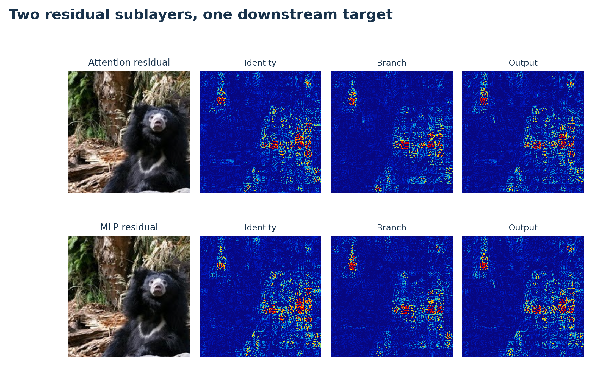
上下两行分别为 DeiT-S/16 block 5 的 attention 与 MLP residual，同一懒熊输入和 ground-truth logit。各行从左至右为输入、identity/carry 局部图、branch contribution 和完整目标 Total Endpoint。两种 identity 对应不同 residual 输入；完整 signed 图满足 identity 加 branch 等于 Total Endpoint。正部 panel 按 P99 独立缩放并开方，不能直接相加。单例展示，无统计区间。
Rows show the attention and MLP residuals in DeiT-S/16 block 5 for one sloth-bear image and ground-truth logit. Columns show the input, identity/carry local map, branch contribution, and full-target Total Endpoint. Identity refers to different residual inputs in the two rows; complete signed maps satisfy identity plus branch equals Total Endpoint. Positive panels use independent P99 clipping and square-root scaling and are not additive. This single-image display has no statistical intervals.
Package figure 18. Attention and MLP residuals follow distinct trends
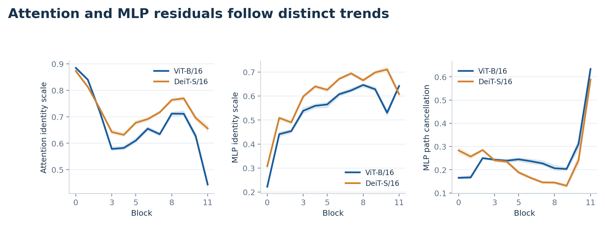
左、中 panel 分别为 attention 和 MLP residual 的 identity relative absolute mass，右 panel 为 MLP identity/branch signed 图的 path cancellation。每图每 block 各有一个对应 residual 值，再取每 checkpoint 400 图的中位数。阴影为 10,000 次图像 bootstrap 的 95% 区间。全部图使用 normalized-input Endpoint。曲线为固定 checkpoint 描述，层深对比属于结果访问前冻结的分模型 family；后续 output–identity spatial TV 为单独的事后分析。
Left and middle panels show identity relative absolute mass for attention and MLP residuals. Right: path cancellation between signed MLP identity and branch maps. Each image contributes one value per residual and block; curves show medians across 400 images per checkpoint. Shading shows 95% intervals from 10,000 image bootstraps. All maps use normalized-input Endpoint. Curves describe fixed checkpoints; depth contrasts use model-specific families frozen before outcome access. The later output–identity spatial-TV analysis is separately post hoc.
Package figure 19. DeiT-S/16: learning images and other visual explanations
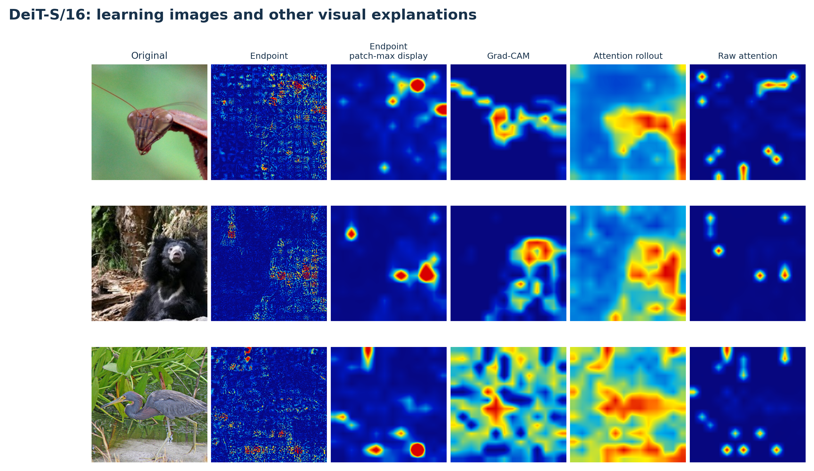
同输入实际计算的 Endpoint、patch-max 显示变体、Grad-CAM、attention rollout 与 raw attention。Endpoint/Grad-CAM 使用同一 GT logit；后两种 attention 方法不依赖类别。所有图采用相同蓝底色系并独立归一化，只比较表示形态与粒度。
Actual same-input Endpoint, its patch-max display variant, Grad-CAM, attention rollout and raw attention. Endpoint/Grad-CAM use the same GT logit; attention methods are class-agnostic. A common blue palette and independent normalization compare spatial form and granularity, not quantitative superiority.
Package figure 20. ViT-B/16: learning images and other visual explanations
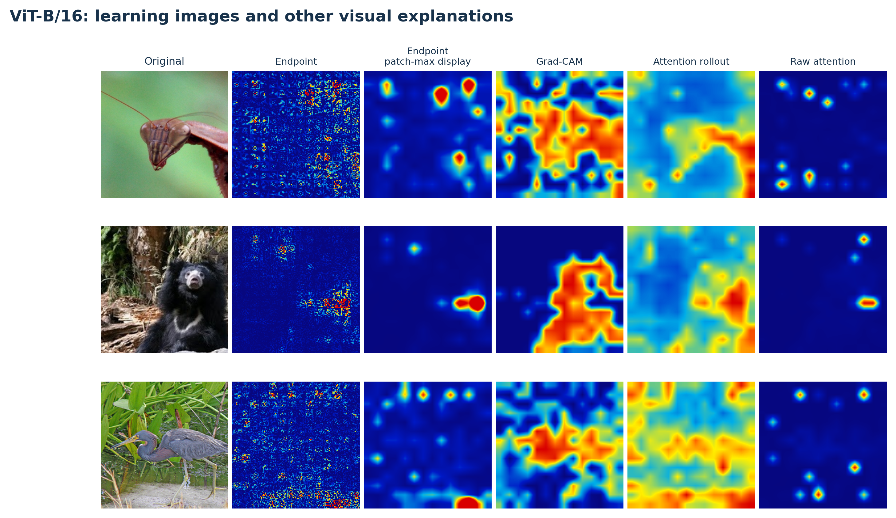
同输入实际计算的 Endpoint、patch-max 显示变体、Grad-CAM、attention rollout 与 raw attention。Endpoint/Grad-CAM 使用同一 GT logit；后两种 attention 方法不依赖类别。所有图采用相同蓝底色系并独立归一化，只比较表示形态与粒度。 Figure 20 的三例在计算比较方法前，已按预先封存的 Endpoint/输入细节可读性规则选定。
Actual same-input Endpoint, its patch-max display variant, Grad-CAM, attention rollout and raw attention. Endpoint/Grad-CAM use the same GT logit; attention methods are class-agnostic. A common blue palette and independent normalization compare spatial form and granularity, not quantitative superiority. Figure 20 examples were selected by the presealed Endpoint/input-detail readability rule before comparison methods were computed.
Package figure 21. Spatial intervention evaluates a different property
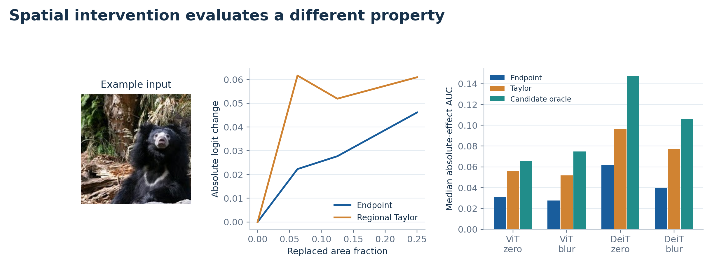
左 panel 为 DeiT-S/16 懒熊输入，中 panel 为 normalized-zero reference 下 block 5 三个固定 heads 的 absolute isolated effect 均值，横轴为替换面积 0、1/16、2/16、4/16。右 panel 为两模型乘两 reference 共四个 family 的图像级 absolute-effect AUC 中位数，每个 n=400，AUC 先在图内按三个 heads 平均。柱图没有误差带，95% 区间见 Tables 8–10。本图为固定任务的描述性展示；candidate envelope 在每个面积点取已评价候选的最大效果，非单条全局最优策略。
Left: the DeiT-S/16 sloth-bear input. Middle: mean absolute isolated effects across three fixed block-5 heads under normalized-zero reference, at replaced areas 0, 1/16, 2/16, and 4/16. Right: image-level median absolute-effect AUC for four model-by-reference families, each n=400, after averaging the three heads within images. Bars have no uncertainty bands; Tables 8–10 report 95% intervals. This is a descriptive display of fixed tasks. The candidate envelope takes the best evaluated effect separately at each area and is not a single globally optimal policy.
Package figure 22. Reading positive structure without discarding signed information
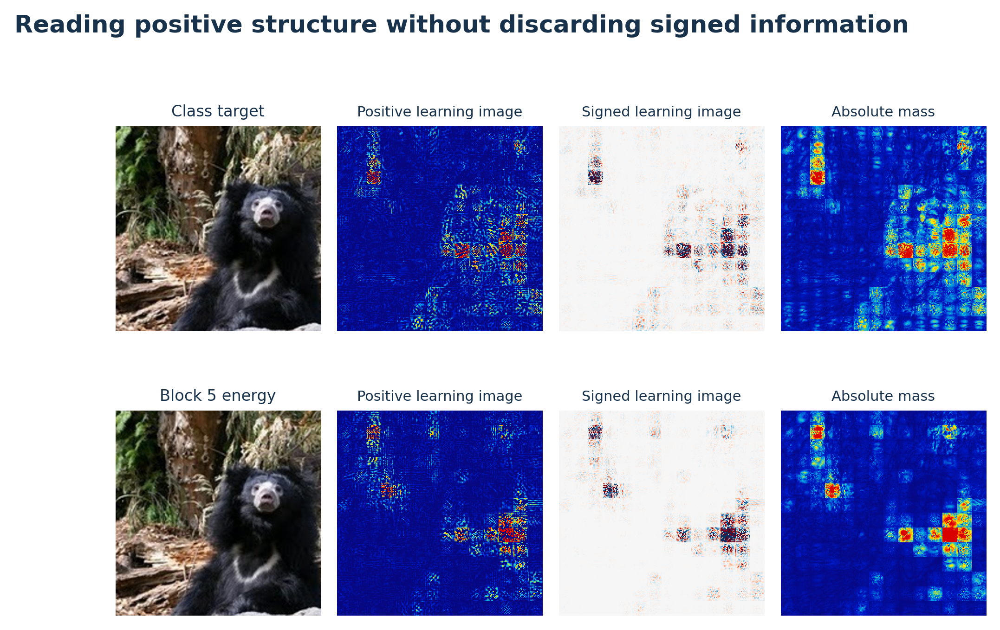
同一原始图的蓝底正部、signed 与 RGB absolute mass 三种视图。正部用于读取空间细节，signed 保留方向，absolute 保留通道抵消前的总幅值。
Blue positive, signed and RGB absolute-mass views of the same original arrays. The positive view displays spatial detail, signed maps retain direction, and absolute maps preserve magnitude before channel cancellation.